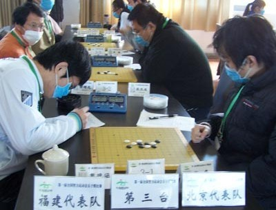

第二轮快讯
首页
全国智运会专题
#1 第二轮快讯 作者：我是裁判 发表时间：2009-11-20 12:49:26
北京VS福建,第一台曹冬简单胜戴晓涵,全局16个子
#2 Re:第二轮快讯 作者：小丸.net 发表时间：2009-11-20 12:59:19
 又是什么高级骗？小天又想表演计算力，结果发现已经必败了～
又是什么高级骗？小天又想表演计算力，结果发现已经必败了～
#3 Re:第二轮快讯 作者：闫荣辉 发表时间：2009-11-20 13:14:20
期待发谱欣赏下
#4 Re:第二轮快讯 作者：南京小飞机 发表时间：2009-11-20 13:30:52
11颗棋子了 我拆有点像松月 但是顺序实在搞不明白

#5 Re:Re:第二轮快讯 作者：慕容晓文 发表时间：2009-11-20 14:24:35
引用：
原文由 Type 发表于 2009-11-20 13:38:29 :
=======上图对应的爱五子棋谱代码如下，以便你拆解：========
h8h9h7h6i9g7i5i8g10g5i7g6g8g4g3i6
======================================================个人猜想棋谱是这样的。。
貌似如此啊